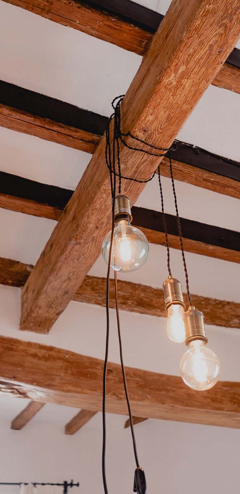
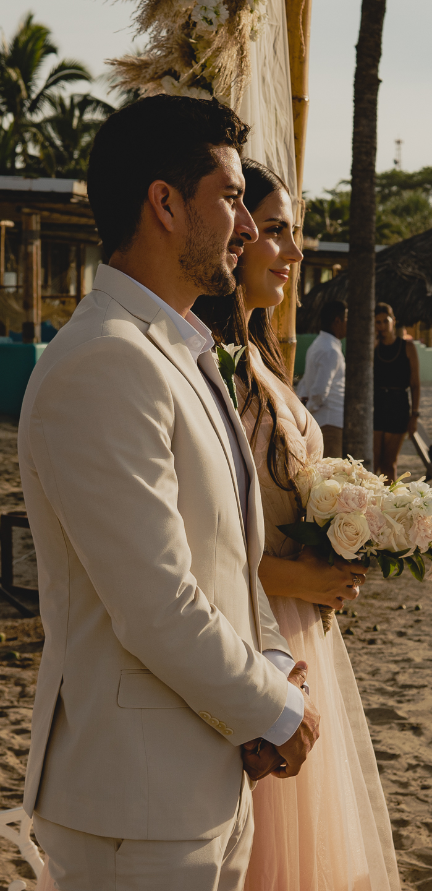
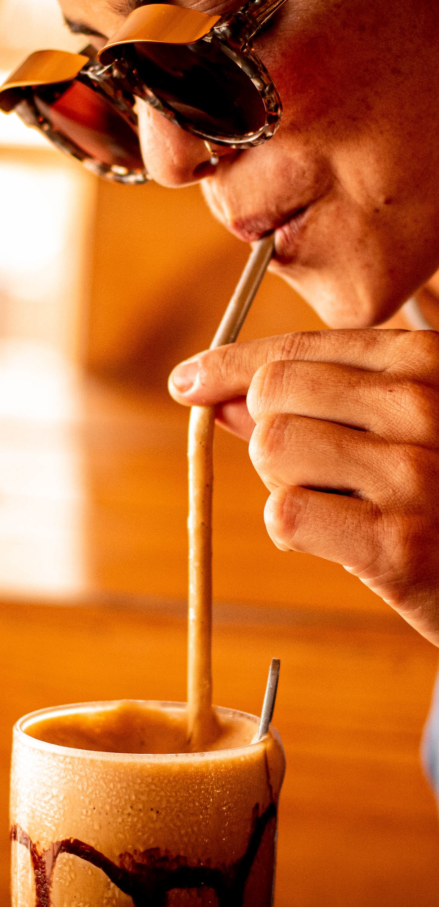
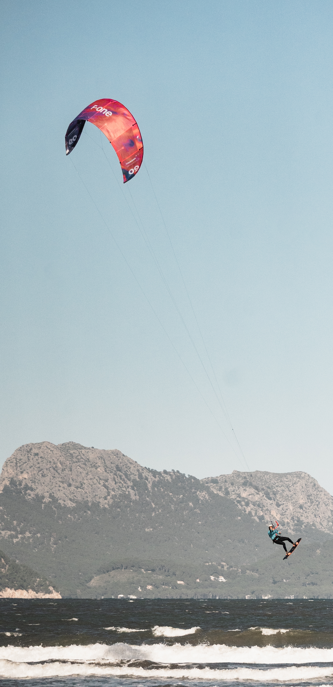

Dwellings

Wedding

Gastronomy

Lifestyle





Mi trabajo no es solo fotografía o filmmaking; es la unión de mis pasiones y la forma más sincera de expresar cómo veo el mundo.
Trabajé como chef y aprendí a leer la composición, la textura y el arte de presentar algo que despierte emoción desde el primer vistazo.
La música siempre ha sido mi lenguaje. De ella nace mi ritmo narrativo: transiciones fluidas, cadencia natural y una forma intuitiva de contar historias en movimiento real.
Como instructor de deportes náuticos descubrí cómo cambia la luz durante el día, el poder del amanecer, el misterio de la noche y la energía humana en su estado más puro y honesto.
Hoy combino técnica, sensibilidad y una mirada sensorial para crear historias reales en bodas, deportes, gastronomía y proyectos de lifestyle auténtico.
No documento momentos: los vivo contigo. Me involucro en la energía de cada situación para capturar lo que realmente pasa, incluso cuando nadie más está mirando de cerca.
Mi estilo de vida me enseñó a valorar la conexión humana, el flujo natural de cada proyecto y el ritmo emocional que hace que una historia respire y tenga sentido propio.
Inmortalizo la adrenalina de un evento deportivo, la emoción íntima de una boda, la dedicación detrás de un plato gastronómico y la esencia real de un lifestyle vivido sin posturas.
Siempre busco la luz, la historia y esa chispa vital que transforma una imagen o un vídeo en un recuerdo que sigue vivo en tu memoria con el paso del tiempo.
Si quieres una mirada artística, experiencia real y sensibilidad humana, aquí tienes a alguien dispuesto a contar tu historia con honestidad y propia voz.